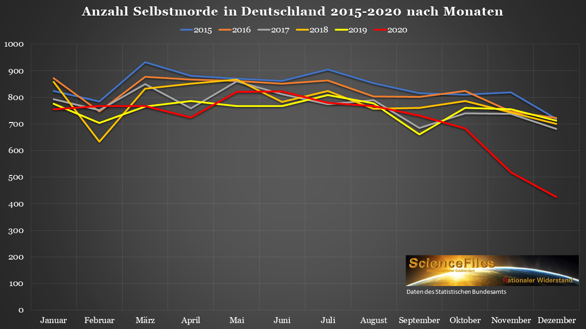

"Normale" Impfstoffe, also nicht genetisch
- Der Impfstoff mit der bisher kürzesten Entwicklungszeit (der nicht wieder vom Markt genommen werden musste) war gegen Mumps: 4 Jahre Entwicklungszeit
- Die durchschnittliche Entwicklungszeit beträgt: 10-12 Jahre
- Die österreichische Ärztezeitung geht bei der Entwicklung von einem neuartigen Impfstoff, der wirksam und zugleich sicher ist, von einer Entwicklungszeit zwischen 15 und 20 Jahren aus (Quelle)
- Die Entwicklungszeit ist so lange, um sicherzustellen das Risikogruppen, ältere und Kinder diesen Impfstoff vertragen, und er dort auch wirksam ist. Der Vorteil der Impfung muss das Risiko rechtfertigen
Phasen der Impfstoffentwicklung und klinische Testphasen
Ausserdem: Wehret den Anfängen! Lobbyisten können sich nun auf die vorhandenen Notfallzulassungen berufen und die Sicherheitsstandards in weiteren Verfahren senken.
Präklinische Phase
- Dauert typischerweise mehr als 5 Jahre (Laut Verband der forschenden Pharmaunternehmen)
- Test an Zellkulturen
- Danach Tests an Primaten
Klinische Phase I
- Dauert mindestens 1 Jahr, normalerweise länger
- Weniger als 100 Teilnehmer
- Keine Relevanz für Sicherheit, es geht nur um Verträglichkeit
- Gelangt der Impfstoff ins Zielgewebe?
- Erstmals Tests an Menschen
Klinische Phase II
- Dauert typischerweise 2-3 Jahre
- Test an unter 1.000 Teilnehmern
- Sinnvolle Dosierungshöhe ermitteln
- Placebotests zu Nebenwirkungen
Klinische Phase III
- Dauert typischerweise mindestens zwei Jahre, in der Regel 4 Jahre
- Tausende Testpersonen
- Einbeziehung von Allergikern, sehr jungen, sehr alten Menschen
- Evaluierung der Nebenwirkungen
- Gibt es zeitverzögerte Nebenwirkungen, die erst nach einigen Jahren auftreten?
- Wie lange hält die Impfung an?
- Wie gut schützt die Impfung?
- Sterile Immunität, oder nur klinische Immunität?
- Es sollen möglichst wenige Fragen für Phase IV offen bleiben
Klinische Phase IV
- Empirischer Beweis das der Nutzen das Risiko deutlich übersteigt
- Weiterhin Monitoring von Wirkung und Nebenwirkungen
Corona Impfstoffarten
RNA Impfstoffe
Notfallzulassung:- BioNTech/Pfizer
- Moderna
- Die Basis für die Gewinnung stellen Plasmide (ringförmige DNA) dar, die gentechnisch modifiziert werden
- Anschliessend kommen als "Erntemaschinen" RNA Polymerasen zum Einsatz die grosse Mengen mRNA "abernten"
- Das Ergebnis ist eine synthetisch erzeugte, genetisch modifizerte mRNA
- Die Herausforderung ist, das die gentechnisch erzeugte mRNA so fremd sein muss die Immunantwort auszulösen, gleichzeitig aber unserer RNA ähneln muss um reproduziert werden zu können
- Es kommt kein natürlicher Bestandteil eines Virus zum Einsatz
- mRNA Impfungen enthalten nicht den gleichen Stoff aus dem die Viren gemacht sind
- RNA Impfstoffe werden seit mehr als 20 Jahren erforscht, trotzdem gelang es keinem Kandidaten bisher die klinische Phase II abzuschliessen.
- RNA Impfstoffe kamen bisher vereinzelt in der Tiermedizin zur Anwendung (Nutztiere)
- Wer sich impfen lässt, aber nur Produkte ohne "Genmais" kauft ist schlecht informiert ;-)
DNA Impfstoffe
Virale Vektorimpfstoffe
Notfallzulassung:- AstraZeneca/Universität Oxford
- Janssen/Johnson&Johnson
- Vektorviren können bei bis zu einem Prozent der Zellen in die sie gelangen dauerhaft ins Genom der geimpften Person integriert werden
- Vektorimpfstoffe wurden bisher hauptsächlich in der Tiermedizin eingesetzt
- Es gibt bereits wenige Vektorimpfstoffe mit Zulassung in der Humanmedizin, z.B. gegen schwere Krankheiten wie Ebola (70% Infektionssterblichkeit)
- 2015 wurde in den Philippinen ein Vektorvirusimpfprogramm gegen Dengue aufgelegt. Die Impfung erwies sich als unwirksam, führte aber zur Bildung infektionsverstärkender Antikörper
- Zwei Phase II Studien zu einem Vektorvirus, der gegen HIV schützen sollte, ergaben das bei Männern Risiko erhöht wurde sich mit HIV zu infizieren. Das konnte erst nach Auswertung der 4 jährigen Studie ermittelt werden. Auch durch eine Erhöhung der Teilnehmerzahl wäre der Effekt nicht früher sichtbar geworden. Man kam zu dem Schluss das der verwendete Vektorvirus die Ursache ist.
- Diese Langzeiteffekte bleiben immer wieder unerwähnt. "Wenn jemand nicht sofort umfällt ist alles gut"
Nachgeguckt zu Impfstoffen
Bereits im März 2020 spricht sich Drosten dafür aus Regularien für Impfstoffe ausser Kraft zu setzen. Zu dem Zeitpunkt konnte es noch keine zuverlässige Einschätzunge der Situation geben, und über die Krankheit war auch nicht viel bekannt.
In der Öffentlichkeit werden quasi nur RNA Impfstoffe dargestellt. Die in der Öffentlichkeit von Anfang an gehypten Impfstoffe sind auch exakt die, die letztlich eine Notzulassung erhalten.
Die Bill Gates Stiftung investiert teilweise erhebliche Summen in die Firmen die an solchen Impfstoffen forschen.
Selbst Bill Gates und Tony Fauci gingen noch von min. 18 Monaten Entwicklungszeit aus, die ist deutlich unterschritten.
AstraZeneca wurde statt gegen eine Placebo-Vergleichsgruppe (wie üblich), gegen einen Meningokokken-Impfstoff als Vergleich getestet. Der hat eine höherere Reaktogenität, erzeugt also häufig akute Nebenwirkungen. Der getestetete Impfstoffkandidat (AstraZeneca) sieht dann im Vergleich besser aus.
Eine Verkürzung der Entwicklungszeit bedeutet das Langzeitbeobachtungen nicht stattfinden vor dem Einsatz des neuen Impfstoffes. Das verkürzte Verfahren verfrachtet einen Teil der Fragestellungen nach Phase IV, die eigentlich vorher geklärt sein sollten. Zur Erinnerung: Phase III dauert typischerweise 4 Jahre, und umfasst einige tausend Testpersonen. Das spart man sich und testet an Millionen.
Einem Teil der Testpersonen wurde vorbeugend fiebersenkende und Schmerzhemmende Mittel wie Paracetamol verabreicht.
Bei 46% der Testgeimpften zeigte sich Neutropenie, ein Anzeichen für Abfall unserer Hintergrundimmunität. Der Abfall ist nicht ungewöhnlich bei einer Impfung, liegt normalerweise aber im einstelligen Bereich.
Bei AstraZeneca wurde in der dritten klinischen Phase ein Fall von Rückenmarksentzündung 14 Tage nach der Impfung festgestellt. Die Ursache dafür konnte nicht gefunden werden, die Studie wurde fortgesetzt.
In der präklinischen Phase von AstraZeneca wurde in Primatenversuchen bei Nasenabstrichen festgestellt das auch alle geimpften Tiere infiziert waren. Quelle
Eine Verkürzung der Entwicklungszeit bedeutet das Phasen der Entwicklung schon begonnen werden, bevor die vorherigen Phasen endgültig ausgewertet wurden.
Tal Zaks, Chefmediziner von Moderna: "Our trial will not demonstrate prevention of transmission, because in order to do that you have to swab people twice a week for very long periods, and that becomes operationally untenable. [...] you’d need a trial that is 5 or 10 times longer to collect those events" Weiterhin sagt er, umfassende und lange Untersuchungen wären zu teuer, da mehrere Impfstoffproduzenten parallel mit Geld unterstützt werden.
Hamish Duncan, Mediziner: "Wir schlafwandeln in eine riesige Kohortenstudie", als er feststellte das der rege Diskurs zu den Impfstoffen in der Fachwelt ausblieb. Quelle
Die Impfstoffe wurden bereits angewendet bevor die letzte klinische Phase beendet war (die in der Regel 4 Jahre, mindestens 2 Jahre dauert).
Verursacht ein Impfstoff Schäden an Embryonen? Das kann in der kürze der Testphase nicht geklärt worden sein.
Ein erhöhtes Krebsrisiko kann durch die verkürzten Verfahren nicht festgestellt werden.
Menschen mit allergischer Krankengeschichte sollten BioNTech meiden.
Mangelnde Produktionsstabilität bei Astrazeneca, wie bereits an mehreren Chargen von der Universitätsmedizin Ulm festgestellt wurde. "Mit den zahlreichen entdeckten verunreinigenden Proteinen (…) und der so immanenten Unsicherheit, ob einige der Unreinheiten langfristige Nebeneffekte mit Immun-Bezug haben könnten, ist es notwendig, das Reinigungsverfahren für den Impfstoff zu verbessern, um seine Sicherheit potenziell zu erhöhen und Vorbehalte auszuräumen."
Laut Patric Vogel (Biologe und Pharmazieberater) baut sich gegen Vektorviren langfristig eine Immunität auf. Eine weitere Impfung (Auffrischung) funktioniert dann nicht mehr. Der Vektorvirus wird erkannt und bekämpft bevor er das Antigen in unseren Zellen abliefern kann.
Ein Genetiker und Molekularbiologen-Team vom MIT hat Hinweise darauf gefunden das sich Teile der SARS-CoV-2 Erbinformation dauerhaft in unser Genom integrieren können. PCR Tests wären in der Folge positiv ohne Erkrankung (ist ja jetzt schon so)
Der Entwickler der mRNA Impfung, Robert Malone, bestätigt selber das:
Interviewer: "Die mRNA Impfungen codieren das Spike Protein, so dass unser Immunsystem lernt das Spike Protein zu erkennen wenn es mit Covid in Berührung kommt. Wie wir jetzt aber erfahren ist das Spike Protein sehr gefährlich und zytotoxisch, ist das korrekt?"
Robert Malone: "Das ist eine zutreffende Beschreibung, und ich habe die FDA schon vor vielen Monaten darüber informiert."Quelle
"Die Teleskopierung von Testabfolgen und Genehmigungen setzt uns alle einem unnötigen Risiko im Zusammenhang mit der Impfung aus. (…) Schon eine ernste Nebenwirkung pro 1.000 Impfungen bedeutet bei 100 Mio. Menschen für 100.000 einen Schaden, obwohl sie zuvor gesund waren [...] Wenn man von einer Letalität bei COVID-19 von im Median ca. 0,05% bei < 70-Jährigen weltweit ausgeht (16), wird es sehr schwer, in dieser Gruppe überhaupt einen Nutzen eines Impfstoffs nachzuweisen. Daher müssten die Impfstoffe eigentlich vorwiegend in der Gruppe der > 70-Jährigen getestet werden, was aber zurzeit nicht geschieht." - Virologe und Genetiker William A. Haseltine (Mitbegründer des Human Genome Projektes) Quelle
"Bei einer Infektion, die bei 2.000 jungen Menschen in weniger als einem Fall zum Tode führt, wird nicht nur ein sehr sicherer Impfstoff benötigt, sondern auch einer, der die Infektionskette unterbrechen kann." Quelle
Ebenso wie Corona die Anzahl der Todesfälle durch Herz- und Kreislauferkrankungen zu senken scheint, gibt es ebenfalls am Jahresende weniger Selbstmorde.  Quelle
Laut einer Auswertung der Daten des israelischen Gesundheitsministeriums hat die Impfung lediglich einen Effekt bei 70 bis 89 jährigen, und dort nur einen kleinen Quelle
08.09.2021
Laut Paul Ehrlich Institut (Stand 15.6.21) sind bisher (08.09.2021) in ca. 1,5 Saisons in der Altersgruppe der 50-59 jaehrigen 2.976 Personen mit Coronavirus verstorben. Bei einer Bevoelkerung von ca. 83Mio. macht das in Deutschland eine Rate von 0,0035.